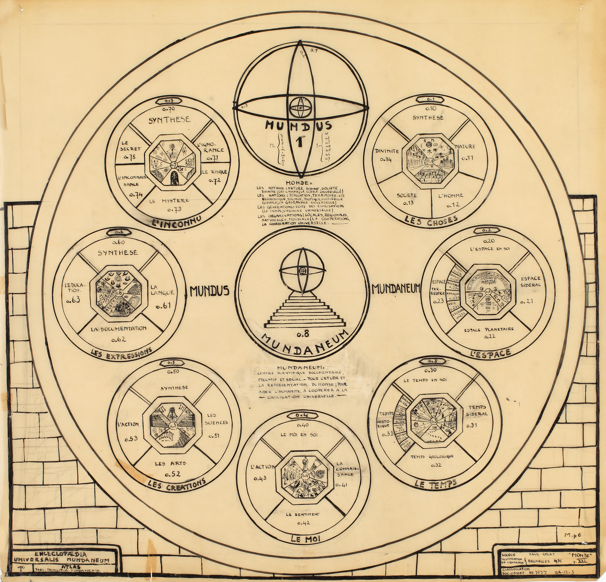
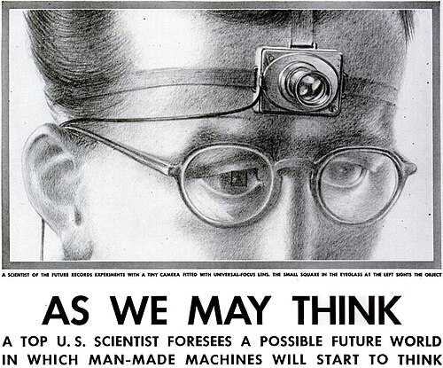
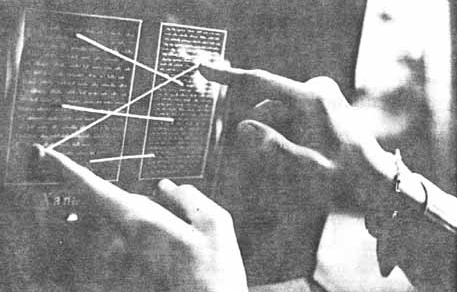
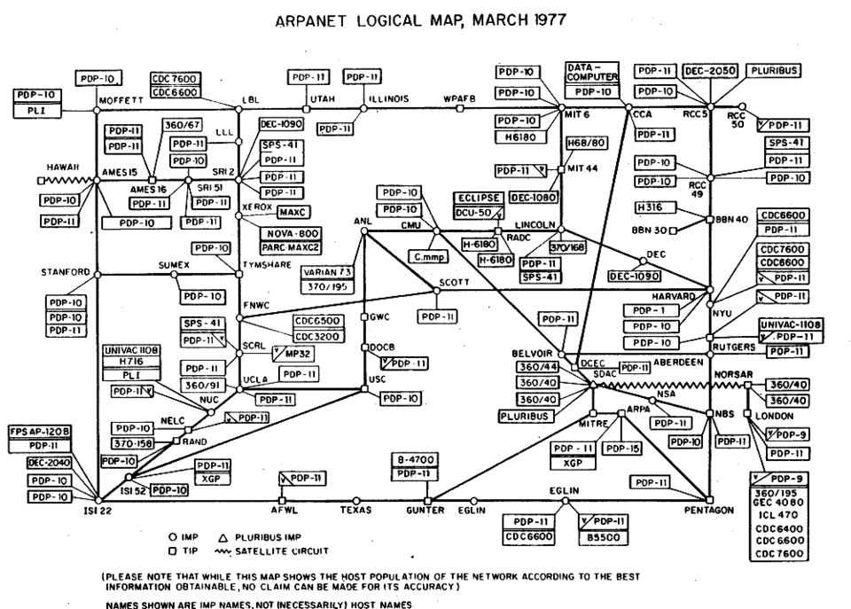
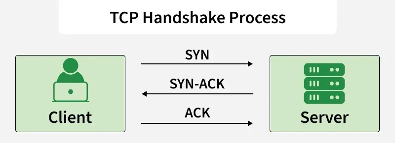
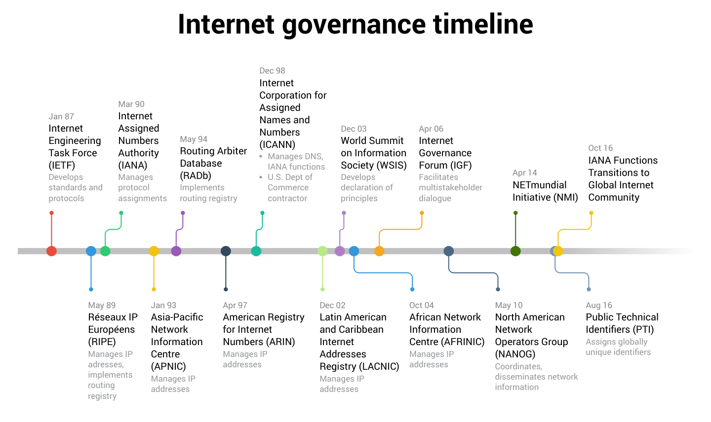
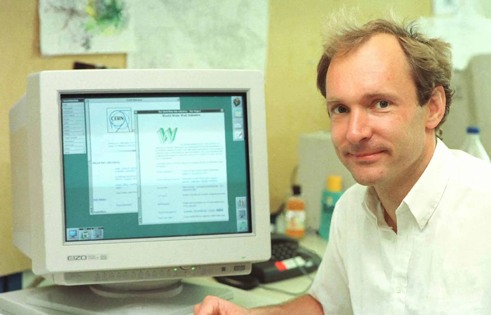
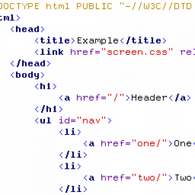
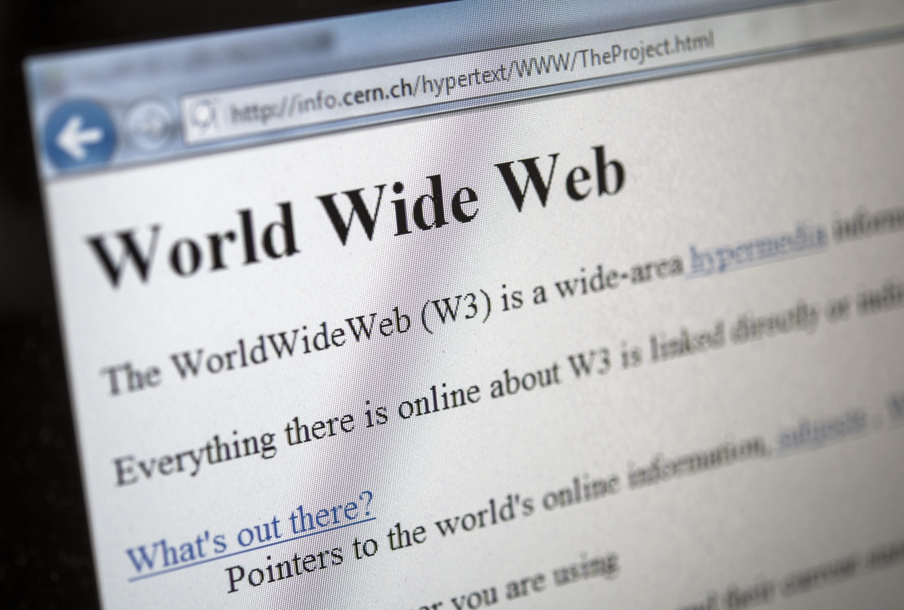
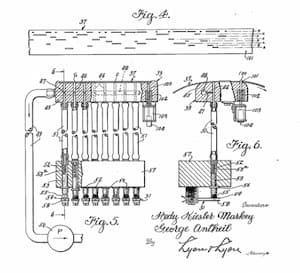

WEB HISTORY
Milestones

1910
Belgian information activist Paul Otlet and Henri La Fontaine begun The Mundaneum in 1910 as part of their work on documentation science.In the early 20th century, Belgian lawyers Paul Otlet and Henri La Fontaine, a 1913 Nobel Peace Prize laureate established the Mundaneum in Brussels. It officially launched in 1910, this project aimed to collect, index, and organize all human knowledge into a central, universal archive. To do so, Otlet developed the Universal Decimal Classification (UDC) system, by building a massive catalog containing over 12 million index cards that cross-referenced books, articles, and media worldwide. The significance of the Mundaneum is in its foundational role in modern information science and its purpose as a predecessor to the internet. Prior to the creation of digital networks, Otlet wanted to interconnect global information using telegraphs and screens which laid the foundation for hypertext, search engines, and digital databases like Wikipedia. He was inspired by the humanist belief that universal access to knowledge would inspire global understanding and peace, their experiment remains a monumental milestone in data collection and management.

1945
In 1945, American engineer and inventor Vannevar Bush published his landmark essay "As We May Think" in The Atlantic, introducing the concept of the Memex (Memory Extender). The goal was to create a personalized, on the hip device, the Memex was designed to help individuals store, organize, and quickly retrieve a vast collections of books, records, and communications using microfilm, screens, and automated levers. The significance of the Memex lied in its futuristic goal of modern information retrieval and personal computing. Bush realized that traditional classification systems were capable of managing human knowledge so he suggested instead a mechanism based on "associative indexing" which was the ability to connect similar pieces of information along customized, permanent trails. This concept directly laid the theoretical foundation for hypertext, the World Wide Web, personal database software, and digital knowledge bases. By focusing on user driven connections over hierarchical storage management (HSM), the Memex completely changed how humanity processed data interaction and information architecture.

1960's
Project Xanadu was created by Ted Nelson as an experimental hypertext system with the goal of creating a computer network with a simple user interface. In the 1960s, American sociologist and computer pioneer Ted Nelson created Project Xanadu, the first attempt to build a global, connected network for reading and writing. During this project, Nelson coined the terms "hypertext" and "hypermedia" to describe a new kind of text that wasn't stuck in a straight line from beginning to end. Instead of reading a book page by page, his system allowed readers to click on words or ideas to quickly jump to related information elsewhere on the page. The significance of Project Xanadu is in its vision for how humans could interact with digital information. While Nelson’s original, highly complex system was never fully realized, his inspirational concept of hypertext became the foundational idea behind the World Wide Web. For instance, every time you click a blue link on a website to hop between web pages, you are using the core idea Ted Nelson thought of decades ago which transformed the internet into an community of thoughts.

1960
In the late 1960s, the U.S. government's Advanced Research Projects Agency funded the creation of ARPANET, marking the official birth of the internet. Computer scientists developed a groundbreaking way to send data called "packet switching," which broke information down into small digital chunks, sent them across cables, and reassembled them at their destination. In October 1969, the very first message—the letters "LO"—was successfully sent between two computers at UCLA and Stanford. The significance of ARPANET lies in its role as the direct technical foundation of the modern internet. Before ARPANET, computers were isolated machines that couldn't easily talk to one another. By proving that distant computers could share information reliably across a network, ARPANET paved the way for modern networking tools like TCP/IP protocols, email, and the interconnected digital world we rely on today.
1971
In 1971, computer programmer Ray Tomlinson sent what is widely accepted as the first email. At the time, computers were mostly used by researchers and could communicate with each other, but there was no easy way for one person to send a message to another person on a different computer. Tomlinson changed this by creating a system that allowed messages to be sent between computers. He also introduced the use of the “@” symbol in email addresses to separate a person’s name from the computer they were using. This made it possible to identify both the recipient and their computer. Although the first email was a simple test message, Tomlinson’s idea became extremely important. It helped create a faster and easier way for people to communicate without having to meet in person or send physical letters. His work eventually helped lead to the email systems we use every day for school, work, business, and personal communication.

1983
The TCP/IP was created by Vint Cerf and Robert Kahn. In 1983, Vint Cerf and Robert Kahn helped establish TCP/IP, a set of rules that allows computers and networks to communicate with each other. Before TCP/IP, different computer networks often used different systems, which made it difficult for them to connect and share information. TCP/IP solved this problem by developing a common way for data to travel between different networks. It breaks information into smaller pieces called packets, sends them to their destination, and puts them back together when they arrive. On January 1, 1983, ARPANET, an early computer network that helped lead to the modern internet, officially began using TCP/IP. This was an important step in the development of the internet because it allowed many different networks to connect and communicate as one larger network. TCP/IP became the basic foundation of the internet and is still used today whenever we browse websites, send messages, stream videos, or use online services.

1983
Internet Governance
In 1983, ARPANET was divided into two separate networks: MILNET and ARPANET. MILNET was used by the military for unclassified military communication, while the original ARPANET continued to be used by universities, researchers, and academics. This separation was important because it allowed the military and research communities to use networks for their different needs while still helping computer networks develop and grow. The same year, TCP/IP became the standard communication system for ARPANET, making it easier for different networks to connect with each other. A few years later, in 1986, the NSFNET, National Science Foundation (NSF) launched NSFNET. NSFNET connected universities and researchers to powerful supercomputers and allowed them to share information and resources more easily. These developments helped expand computer networking beyond the military and research groups. They were significant steps toward creating the larger, connected internet that people use today for communication, education, business, entertainment, and information.

1989
Tim Berners-Lee and Robert Cailliau worked together at CERN where they created the World Wide Web. In 1989, they begandeveloping the World Wide Web while working at CERN, a research organization in Switzerland. They turned the idea into a system that would make it easier for people to share and find information online. They developed important parts of the Web, including web pages, links, and ways for computers to communicate with each other. Berners-Lee also created the first web browser and web server. The World Wide Web became publicly available in the early 1990s and made the internet much easier for ordinary people to use. Before the Web, using the internet often required more technical knowledge and was mainly used by researchers and other specialists. The Web changed this by allowing people to access information through websites and clickable links. Its creation was significant because it helped transform the internet into a global tool for communication, education, business, entertainment, and everyday life.

1990
In 1990, Tim Berners-Lee created several important technologies that became the foundation of the World Wide Web. These included HTML, HTTP, URLs, and the web browser. HTML is the language used to create and organize content on web pages. HTTP is a set of rules that allows a browser and a website to communicate and exchange information. A URL is the web address that helps people find a specific website or page. Berners-Lee also created one of the first web browsers, which allowed people to view and interact with information on the Web. Together, these technologies made it possible for people to create, find, and access information online in a much simpler way. This was significant because it helped turn the Web from an idea into something people could actually use. These same basic technologies continue to play an important role in how websites work today, allowing billions of people to access and share information across the internet. (html, url, http, browser)

1991
On August 2, 1991, Tim Berners-Lee created the first website in history. The website was created to explain the World Wide Web and teach people how to use it. It provided information about what the Web was, how people could create their own web pages, and how they could search for information online. At the time, websites were very new, and most people had never used anything like them before. The first website was simple compared to the websites we use today, but it introduced an entirely new way of sharing information. Instead of having to find information through books, newspapers, or other physical sources, people could eventually access information through the Web from their computers. This event was significant because it showed how the World Wide Web could be used to organize and share information. Berners-Lee’s first website helped demonstrate the possibilities of the Web and became an important step toward the modern internet we use today.
1990
Alan Emtage created "a pre-Web internet search engine for locating material in public FTP archive" called Archie. Emtage was a student at McGill University in Canada, and he noticed that it was becoming difficult to find files stored on different computers. To solve this problem, he created Archie, which created an index, or organized list, of files available on the internet. People could search the index to find where a specific file was located instead of having to search through computers manually. Archie was different from modern search engines because it mainly searched for file names and locations rather than the information inside websites. Even though it was simple, Archie was an important development in internet history. It introduced the idea of using a searchable index to help people find information online. This eventually influenced the development of more advanced search engines, making it much easier for people to find information on the growing internet.
1992
In 1992, Tim Berners-Lee posted what is widely considered the first photograph on the World Wide Web. The photo showed the members of a comedy group called Les Horribles Cernettes, which was made up of women who worked at CERN, the research organization where Berners-Lee created the Web. He uploaded the image to a website so people could view it online. At the time, putting a photograph on a web page was a new and exciting idea because the Web was still very young. Most early websites were mainly made up of text, so adding images showed that the Web could be used for more than just reading information. This event was significant because images soon became an important part of the online experience. Today, people use the internet to share billions of photos through websites and social media. Berners-Lee’s simple act of putting a photo online helped demonstrate how the Web could become a more visual and interactive place for people around the world.

1997
In 1997, the Institute of Electrical and Electronics Engineers (IEEE) released the first 802.11 standard for wireless networking. This was an important step toward what we now call Wi-Fi. Before wireless networking became common, computers usually needed to be connected to the internet using physical cables. The 802.11 standard created a common set of rules that allowed computers and other devices to communicate with networks without needing to be connected by a wire. The first version was not as fast or widely used as the Wi-Fi technology we have today, but it provided the foundation for future improvements. Over time, newer versions of the standard made wireless connections faster, more reliable, and easier to use. The development of Wi-Fi was significant because it gave people more freedom to use the internet without being tied to a specific location or cable. Today, Wi-Fi is used in homes, schools, businesses, airports, and public spaces to connect phones, computers, tablets, and many other devices to the internet.
